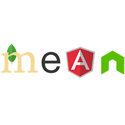

"Get your thinking clean to make it simple"


Franco Berton
Founder & CEO at WavelopChi sono?
In breve....
Salve ragazzi, sono Franco, ho 26 anni e sono il founder e il CEO di Wavelop.
Wavelop è una software house che si pone la mission di sviluppare soluzioni informatiche smart basate sulla tecnologia del momento (cresta dell’onda) e su concetti di modularità, scalabilità e agilità.
Il metodo di sviluppo utilizzato è il metodo Agile, personalizzato con degli standard da noi fissati che ci permetteranno di raggiungere l’obiettivo prefissato in maniera lineare e efficiente.
Wavelop cerca di trasmettere le conoscenze tecnologiche aziendali attraverso la scrittura di articoli che verranno pubblicati su vari blog, uno fra questi Medium, e di metterle in pratica attraverso lo sviluppo di software open source disponibile a tutti su sistemi di hosting come Github; con l’obiettivo di poter accrescere il valore e il prestigio aziendale a livello internazionale.
Wavelop impone al centro dei propri progetti: il cliente, dovuto all'obiettivo di sviluppare prodotti funzionali e che soddisfano al 100% le esigenze di esso.
Come nasce la mia passione per l'informatica?
La mia innata passione per l'informatica, in particolare per il codice, nasce perchè ho avuto sempre interesse a conoscere come il codice si trasformi in qualcosa di concreto. Per questo motivo ho deciso nel 2012 di iscrivermi al corso di Informatica presso l'Università di Padova, dove ho realizzato l'importanza di aspetti come l'affidabilità, l'estensibilità, la leggibilità e la riusabilità per sviluppare software di qualità. Questa consapevolezza mi ha portato ad affrontare questa professione con dedizione e attenzione ai minimi particolari. Nella mia opinione, il software developer non è un lavoro dove si deve avere solo abilità di sviluppo e di design, ma si deve avere una visione futura del mercato e dello sviluppo del mondo tecnologico. La mia passione e dedizione cerco di trasmetterla a tutti, cercando ogni giorno di imparare nuove tecnologie da includere nei miei progetti.
Quali sono le mie skills?
Il linguaggio a cui sono più appassionato e skillato è

perchè rispetto agli altri linguaggi di programmazione, offre una vastissima scelta di librerie che permettono di poter creare applicazioni per smartphone, desktop e web in modo veloce e ad altissime prestazioni.
Durante questi anni ho acquisito una certa solidità e agilità con lo stack Javascript più famoso e utilizzato al mondo:
Tramite l'utilizzo di questo stack ho appreso conoscenze e competenze Javascript sia lato front-end e back-end. Nella parte front-end mi sono imbattuto nella tecnologia

che grazie ad essa mi ha permesso di creare applicazioni "single page" e ad elevatissima modularità
Nella parte back-end le tecnologie

mi hanno dato la possibilità di ottenere elevate perfomance grazie al concetto di asincronismo e di scabilità che sta alla base di esse
Non solo Javascript...
Durante questi anni di attività, ho potuto conoscere e imparare altri linguaggi di programmazione, i quali hanno permesso di incrementare le mie capacità decisionali in base al tipo di progetto da affrontare. Tra questi linguaggi vi sono:


Programming languages skills


Database skills


Vuoi conoscere il mio portfolio?
Vivi Veneto
Il progetto è consistito nella creazione di un sistema che permette al cittadino di usufruire di vari servizi su applicazioni di tipologia differente (IOS, Android, WebApp, Instant messaging).
Queste applicazioni utilizzano una piattaforma centralizzata per l'autenticazione (IDP GATEWAY) e si interfaccianno con uno o più piattaforme di API management per soddisfare le richieste effettuate dall'utente. In questo progetto sono state addottate diverse tecnologie a seconda dei sistemi implementati:
-
Sistema di autenticazione: Angular2, Typescript, NodeJS, HapiJS, MongoDB
Piattaforma di API-MANAGEMENT: WSO2
API Server configurato in modo tale da accettare richieste solo da determinati sistemi di API MANAGEMENT, controllando la validità e contenuto dei token di accesso.
Configuratore SIU
Progetto orientato allo sviluppo di un sistema della Regione Veneto volto alla gestione di procedure di accesso ai principali fondi strutturali e di investimento europei.
L'implementazione del sistema ha previsto l'utilizzo delle seguenti tecnologie:
Front-End:


Back-end:
DB:
MyPortal
Il progetto è consistito nello sviluppo di una piattaforma generale che sarà poi utilizzata da 250 comuni del Veneto. La piattaforma è una sorta di cms tramite il quale i comuni avranno la possibilità di crearsi un proprio portale per poter facilitare la relazione con i cittadini e imprese.
Tecnologie utilizzate:
Front-End:

Back-end:

DB:
Immobiliare Moglianese App
Il progetto è consistito nello sviluppo di una applicazione desktop volta alla gestione dei clienti e degli immobili della società. In particolare, attraverso l'app è possibile contabilizzare fatture e ricevute inerenti ai canoni di locazione degli immobili della società.
Piattaforma di appoggio:
Tecnologie utilizzate:
Front-End:
Back-end:
DB:
Alfresco KMS Plugin
Alfresco è una potente piattaforma ECM aperta, facile da estendere, personalizzare e integrare con le applicazioni e i processi esistenti. Consente alle aziende di gestire qualsiasi tipo di contenuto, da documenti d'ufficio a immagini scansionate e disegni tecnici.
Questa piattaforma è stata utilizzata dall'azienda, dove ho fatto stage, con lo scopo di gestire i progetti e assegnare task ai dipendenti, in modo da monitorare l'avanzamento dei progetti e il lavoro dei dipendenti.
Sono stati apportati dei plugin quali:
Il change password al database LDAP
Il forgot password al database LDAP
Redesign del layout della piattaforma
Quizzipedia
Quizzipedia è un applicativo web che ha come scopo la gestione di quiz. Gli utenti possono allenarsi compilando quiz dinamici oppure creare dei quiz personali da sottoporre a una ristretta cerchia di persone (si pensi ad un insegnante nei confronti degli studenti). L'applicativo offre all'utente la possibilità di eseguire quiz per argomento e all'utente registrato offre la possibilità di salvataggio delle delle statistiche dei questionari svolti.
Alcune tecnologie utilizzate per lo sviluppo del software:
Front-End:
Back-end:
DB:
Quali sono le mie passioni?
Criptocurrencies
Dal 2016 mi sono appassionato a questo nuovo mondo di valute digitali, in quanto lo ritengo una fonte di business incredibile ed il futuro del sistema finanziario mondiale.
Tutt'oggi effettuo investimenti in questi beni e nel futuro ho intenzione di investire nel mining per poter sfruttare al massimo le opportunità che offre questo mercato.
Filosofia
Per definizione, la filosofia è l'insieme dei principi, delle idee e delle convinzioni sui quali una persona o un gruppo di persone fondano la propria concezione della vita. Da ciò nasce il mio amore spassionato per questa materia che mi ha permesso nel corso del tempo di evolvere il mio pensiero e la mia concezione di vita. Sin da quando ero piccolo, l'arte e la scienza hanno avuto in me un grande fascino, portandomi a scoprire il mondo di Leonardo da Vinci. Leonardo diceva che l'arte e la scienza sono due discipline che possono camminare insieme mano nella mano, e questo tipo di visione e concezione ha permesso di poter fondare il mio pensiero su principi di unicità e di perfezione.
Netflix
Sono un'amante di Netflix e ovviamente amo le serie TV! In questi anni mi sono visto quasi tutte le serie tv possibili, le mie preferite sono quelle a carattere biografico o poliziesco, una fra queste è Narcos!
Quali sono i miei contatti?
Contatti
Mi puoi contattare sui seguenti canali:
Grazie per avermi scoperto!
PS: Come mai questo layout?
Come mai questo layout?
La decisione di questo layout sta sul fatto di voler creare una user experience diversa ed unica da quella che deriva da un comune sito di presentazione personale.
Il layout a slide è stato deciso con lo scopo di simulare l'esperienza che deriva dalla lettura di un libro, in modo tale da invogliare l'utente a "girare pagina" e a scoprire ciò che viene dopo.
La banalità è sempre stata una caratteristica che non fa parte della mia personalità, quindi anche per questo motivo ho voluto creare qualcosa di originale e diverso dal comune.